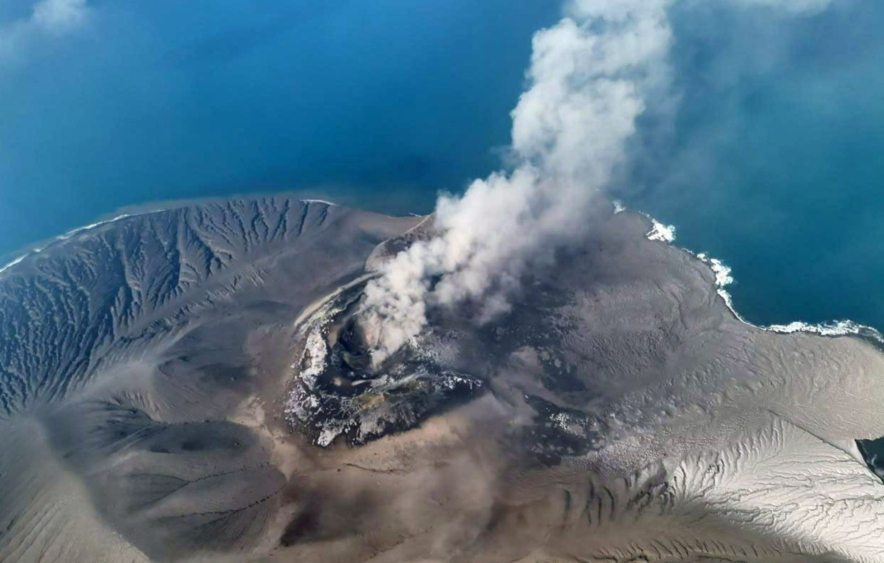

|
Website MeysyaTry to be Better
|
|
|---|---|
| Beranda Tentang Saya Sekolahku Syair Lagu | |
Pembelajaran jarak jauhSenin, 7 September 2026Karena adanya abu erupsi anak gunung Krakatau, maka selama 3 hari kedepan, pemelajaran dilakaukan secara jarak jauh. Pembelajaran dapat memakai zoom, LMS, Whatsapp, Telegram, atau media lain yang ditentukan oleh guru. Gunung Anak Krakatau kembali mengalami erupsi pada Kamis (10/9/2026) sekitar pukul 09.10 WIB. Erupsi tersebut terekam oleh seismograf dengan amplitudo maksimum 47 milimeter dan berlangsung selama 17 detik.  Beberapa dinas pendidikan di Indonesia menetapkan aturan pembelajaran jarak jauh (PJJ) dan pembelajaran tatap muka (PTM) menyesuaikan dengan erupsi Gunung Anak Krakatau (GAK) untuk melindungi keselamatan siswa dan warga sekolah, dilansir dari Detikcom pada Rabu, 9 September 2026. Durasi PJJ berbeda tiap daerah dan disesuaikan dengan kondisi abu vulkanik. Beberapa daerah masih menjalankan PJJ seperti Provinsi Lampung (7-10 September), Banten (7-11 September), Jawa Barat mulai 7 September, serta beberapa kota dan kabupaten seperti Serang, Tangerang, Bekasi, dan Pandeglang hingga 7-9 September. Pemerintah Provinsi Banten memutuskan untuk memperpanjang pelaksanaan pembelajaran jarak jauh (PJJ) atau daring, baik SMA, SMK, dan SKH negeri maupun swasta, hingga Jumat (11/9/2026). Keputusan itu diambil melihat kondisi udara akibat erupsi Gunung Anak Krakatau yang dinilai tidak baik bagi kesehatan pelajar. |
Tautan Eksternal |
| © Copyright Meysya Arum Syavana,2026 | |